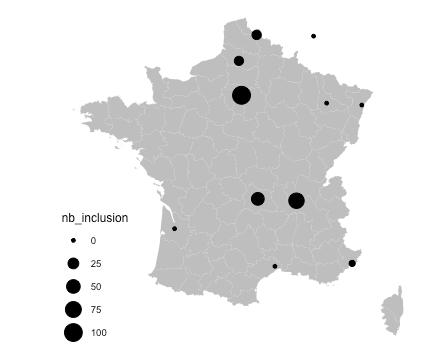

Groupe de REcherche sur les Maladies INflammatoires
Digestives

We have already established a first cohort of more than 200 patients with perfectly curated clinical information (Cohort 1), proving our ability to constitute, manage, organize and exploit such resource. We now have acquired in our group statistical and bioinformatics knowledge and know-how to integrate large set of data.
Location




Visit 1 - Surgery: Specific sampling

Procedure details for sampling - Surgery
Visit 2 - Colonoscopy: Specific sampling

Procedure details for sampling - Colonoscopy